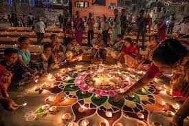

DIWALI
Diwali (English: /dɪˈwɑːliː/), also known as Deepavali (IAST: Dīpāvalī),[4] is the Hindu festival of lights, with variations celebrated in other Indian religions.[a] It symbolises the spiritual "victory of light over darkness, good over evil, and knowledge over ignorance".[5][6][7][8] Diwali is celebrated during the Hindu lunisolar months of Ashvin (according to the amanta tradition) and Kartika—between around mid-September and mid-November. The celebrations generally last five or six days.
Diwali is connected to various religious events, deities and personalities, such as being the day Rama returned to his kingdom in Ayodhya with his wife Sita and his brother Lakshmana after defeating the demon king Ravana.[15] It is also widely associated with Lakshmi, the goddess of prosperity, and Ganesha, the god of wisdom and the remover of obstacles.[16] Other regional traditions connect the holiday to Vishnu, Krishna, Durga, Shiva, Kali, Hanuman, Kubera, Yama, Yami, Dhanvantari, or Vishvakarman.